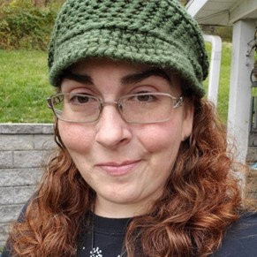
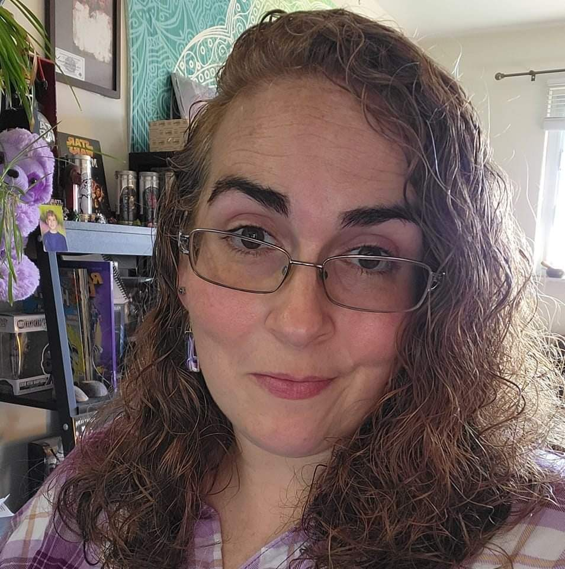

Jesica Vannoy
Born in 1980, in southern West Virginia. Jesica always had an interest in art and colors. From a toddler when she was creating fire hazards melting crayons on lightbulbs creating rainbow lights, much to her mother's annoyance, she has always loved creating. Through school, she tried her hand at drawing, photography, and varying forms of abstract art, until she saw a video of fluid art six years ago. Experimenting in the various techniques and mixes, she found a passion for flow of the paint and the limitless possibilities of color. Using the leftover acrylic paint that would run off the canvases during creation, she learn how to use glass cabochins to create wearing fluid art in the form of necklaces, earrings, and bracelets.

From Hobby to Business
In 2021, she decided to try her hand at turning her hobby into a profit, creating her business Hippie's Color Emporium. When asked how she came up with that name, she responded, "Fifteen, sixteen years ago my friends gave me the nickname because of a hat I would always wear. So that part was easy. I knew my love of color should be there as well, because my art doesn't stick to one pallette or style. And for emporium, well honestly it just hit me that you never here that word anymore. So I decided it would give a uniqueness to the business name." Now, you can find her in the spring and summer months setting up at local craft fairs around Morgantown, creating videos of her creation process on various social media platforms, and running her online shop.